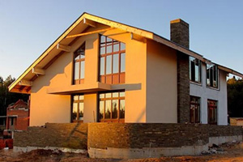

ООО “СтройГрад”
Cтроительство коттеджей.
Проект и строительство дома вместе с ООО “СтройГрад”

Сегодня в городской суете и шуме все больше людей задумываются о своем загородном доме, в котором можно расслабиться после рабочего дня.
Но, приходя домой в надежде на отдых, мы порой слышим звуки ремонта, который так некстати затеяли соседи, и собственные загородные апартаменты начинают манить нас с удвоенной силой.
Компания “СтройГрад” создана для того, чтобы помочь вам воплотить в жизнь эту мечту! Своим клиентам мы предлагаем на выбор несколько технологий строительства коттеджей.
Основной акцент в деятельности компании направлен на пескоцементные стеновые блоки и кирпичное домостроение, как на один из самых перспективных видов современного строительства, предполагающий получение капитального сооружения. Дома, построенные по данной технологии современны и надежны, они предназначены для постоянного проживания и рассчитаны на российский климат, который известен своими достаточно резкими перепадами температуры и влажности.
Наша компания располагает собственным производством на территории Иваново и Ивановской области. Высокоточное оборудование и современный программный продукт позволяют строить коттеджи любой сложности.